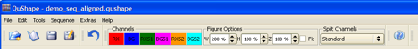
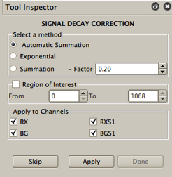
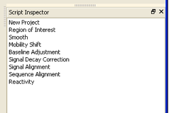
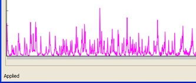

The user controls QuShape via a graphic interface. This interface includes the main Data View window, the Tool Inspector window, and the Script Inspector window. Results of every operation are plotted in the Data View window, allowing the user to monitor the quality of each data processing step. The user can vary the graphic display format via a set of control buttons. At each data processing step, the Tool Inspector window offers the user additional analytical tools that can be employed if the user is not satisfied with the results of the automatic procedure.
Four groups of icons are placed at the top of the screen: File-handling, Channels, Figure Options, and Split Channels.

File-handling icons:
New Project - Click this icon to create a new project.
Open Project - Click this icon to open an existing project.
Save Project- Click this icon to save the project.
Save Project As - Click this icon to save the project under a different name.
Channels icons:
Six differently colored label widgets relate colors of the lines in the Data View window to specific data channels.
RX (red): (+) reagent reaction signal.
BG (blue): (-) reagent reaction signal.
RXS1 (green) and RXS2 (orange): Dideoxynucleotide sequencing signals in the (+) reagent capillary.
BGS1 (magenta) and BGS2 (cyan): Dideoxynucleotide signals in the (-) reagent capillary.
Figure Options icons:
Four icons control the display scales of the Data View window.
W (width): Horizontal scale. Uncheck Fit button to enable this and the next two controls.
H (height): Vertical scale of the entire window.
Z (zoom): Vertical scale within each panel.
Fit: Checking this box will fit the entirety of each plot to the display area.
Split Channels:
Four options control the number of display panels in the Data View window and which data signals are shown in them.
Standard: Each data channel is shown in a separate panel.
Reaction/Sequencing: The reactions channels (RX and BG) are paired together in the top panel and the sequencing channels (RXS, BGS) are paired together in the bottom panel. This pairing is particularly useful in the Signal Alignment step.
Capillary: The reaction and sequencing signals measured in the (+) reagent capillary (RX and RXS) are paired together in the top panel and the reaction and sequencing signals measured in the (-) reagent capillary (BG, BGS) are paired together in the bottom panel. This pairing is particularly useful in the Mobility Shift step.
One Panel: All data can be observed superimposed in a single plot.
If used, RXS2 is plotted with RXS1 in the same panel and BGS2 is plotted with BGS1 in the same panel.
Data processing steps are executed on command from the Tool Inspector window. Selection of each successive data processing step is either automatic (default option) or is performed by clicking on a particular tool among those listed in the Tools and Sequence pull-down menu options on the top menu bar. The selection of tools is enabled once a data file has been loaded.
The Tool Inspector window has three standard buttons, common to all tools, as well as unique control buttons specific to particular tools. The three standard buttons are Apply, Done, and Skip. The Apply button initiates the execution of the tool. Click this button after selecting appropriate settings for the tool (if different from the default settings). If the result of the tool execution is satisfactory (ascertained by checking the display in the Data View window), click the Done button to accept the result. The name of this tool will then appear in the Script Inspector window (registering it as having been executed), and the next appropriate tool will be displayed in the Tool Inspector window ready for action. If the current tool is not needed, clicking the Skip button will cancel any modifications this tool may have made to the loaded data and will move the program to the next appropriate tool.
Some tools have an Apply to Channels option. The tool will be applied only to those channels with boxes checked. In addition, some tools have the option of being applied to a subset of the data specified by an elution time interval using the Region of Interest spin-box widgets.

The Script Inspector displays the sequence of tools applied to the active dataset. It is possible, using this window, to review the effects of the tools used and to restore an earlier state and continue processing. By double-clicking aparticular tool in the script, the final product of this tool will be shown in the Data View window. In this way, it is possible to observe the interval results of eac applied tools.

Some of the tools are computationally intensive, and the processes take tens of seconds to execute. During their execution (after pressing the Apply button), the left-bottom corner of the screen will displaying the “Applying…” message. Once the operation is finished, this message will change to “Applied” and the Done button in the Tool Inspector window will become enabled (its appearance will change from dim to sharp contrast).

The Loaded Files Panel displays a list of all the files that are currently loaded in QuShape. The highlighted file is the current file displayed in the Data View Window. By clicking on a file name it is possible to switch the display from the current file to the newly selected file.